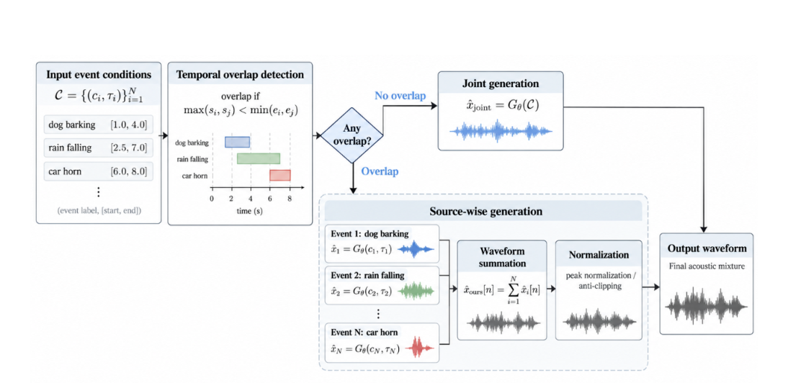

Specify the events
Describe each sound and assign its start and end times. SATAG checks whether the requested intervals overlap.
AUDIO GENERATION · RESEARCH DEMO
Generate overlapping sound events with explicit timing
and event-level mixing control. No additional training.
Sogang University, Seoul, Republic of Korea
Temporally controllable text-to-audio models specify when a sound occurs. When several sounds overlap, however, individual events may disappear, fuse together, or lose their intended timing. SATAG detects overlap in the input conditions, generates event-specific waveforms with a fixed pretrained model, and combines them through acoustic superposition. Without overlap, it retains the original generation procedure.
01 / LISTEN TO THE PROBLEM
The same event pairs, under different temporal conditions. Listen for both sounds and follow their requested intervals.
Figure 1. DegDiT joint-generation examples. These supplied figure clips are silenced outside the union of the specified event intervals; they illustrate overlap behavior, not unprocessed temporal-boundary performance. Red and yellow boxes in the non-overlap spectrograms mark the two target events.
02 / THE DATASET
AudioCaps-T augments fine-grained AudioCaps descriptions with event-level onset and offset timestamps estimated by SpotSound. These author-selected examples let you hear how the predicted event intervals correspond to the source audio.
AudioCaps-T qualitative examples. The colored bars show automatically estimated event intervals, not manual ground-truth boundaries. These three clips were selected after listening as clear examples of useful temporal annotations; they illustrate annotation quality but do not constitute a dataset-wide accuracy measurement.
03 / SIDE-BY-SIDE LISTENING
Compare joint generation with source-wise generation and waveform mixing.
The baseline clips here are the original, unmasked s00 outputs from the source example collection: DegDiT joint generation, epoch 90, CFG 4.0, 50 sampling steps. They are distinct from the masked Figure 1 clips above.
SATAG audio will be included when matched outputs are available. At 0% overlap, SATAG retains the baseline generation procedure. These qualitative clips are not the epoch-100 checkpoint used in the manuscript’s quantitative study.
04 / THE METHOD
Keep the pretrained model. Change how overlapping events become a mixture.

Describe each sound and assign its start and end times. SATAG checks whether the requested intervals overlap.
For overlapping conditions, generate event-specific waveforms with fixed model parameters, batched in parallel.
Sum the waveforms and apply global peak normalization. Optional relative weights control each event’s contribution.
With specified mixing weights, normalize each source to a common peak reference before weighting and summation. The weights describe waveform amplitude, not a guaranteed perceived-loudness ratio.
INTERACTIVE EXAMPLES
Choose an event pair, then compare raw summation with two relative mixing conditions.
Amplitude-control examples. All events fully overlap from 2.24–6.97 s and use seed 42 with batched source-wise generation. Ratios are waveform-amplitude weights applied after per-source peak normalization; they are not perceptual loudness ratios. The raw summation is provided to expose clipping risk and is not the final SATAG output.
05 / EXPERIMENTS
DegDiT and SATAG, evaluated with identical event pairs and temporal conditions.
| Overlap | Method | Event Recall ↑ | Onset MAE ↓ | Offset MAE ↓ |
|---|---|---|---|---|
| 50% | DegDiT | 0.5690 | 0.8138 s | 1.1722 s |
| SATAG Ours | 0.8054 | 0.6980 s | 1.0942 s | |
| 100% | DegDiT | 0.4407 | 0.8225 s | 0.8822 s |
| SATAG Ours | 0.1513 | 0.5380 s | 0.6754 s |
Event Recall is the mean number of events fully contained in their target intervals (0–2), not a percentage. MAE uses valid predicted intervals; samples without valid predictions are excluded. Bold marks the best value per overlap condition.
In this draft, SATAG reduces temporal error at both overlap levels; Event Recall improves at 50% overlap and decreases at 100%. The lower MAE should be read alongside the recall result.